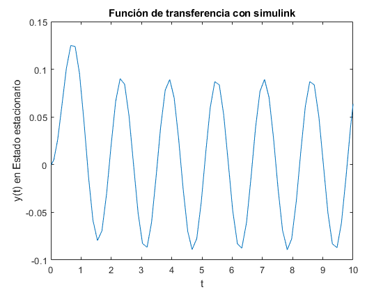
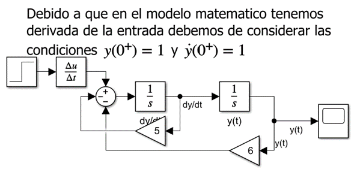
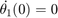

ASyS Practica 11: Simulink
Contents
Integrantes
- Dorantes Ochoa Daniel
- Ruiz Guadarrama Juan Carlos
- Santos Garrido Diana Karen
- Lopez Solano Irvin
Objetivos de la Practica:
- Conocer Simulink
- Implementar simulaciones de ecuaciones diferenciales en Simulink
Desarrollo
se tienen que resolver cada uno de los siguientes problemas comenzando una nueva sección (para la publicación) en cada uno de ellos.
Ejercicio 1:
- INCISO a) Para la siguiente ecuacion dada:
a) La solución analítica mediante transformada de laplace
syms t s; x=heaviside(t)*2*cos(4*t-pi/3); X=laplace(x)+(s+5) Y(s)=s^2+5*s+6; y(s)=simplify(X/Y) y(t)=ilaplace(y(s))
X = s + (4*3^(1/2))/(s^2 + 16) + s/(s^2 + 16) + 5 y(s) = (s^3 + 5*s^2 + 17*s + 4*3^(1/2) + 80)/((s^2 + 16)*(s^2 + 5*s + 6)) y(t) = sin(4*t)/25 - cos(4*t)/50 - (3^(1/2)*sin(4*t))/50 + exp(-2*t)*(3^(1/2)/5 + 29/10) - exp(-3*t)*((4*3^(1/2))/25 + 47/25) - (3^(1/2)*cos(4*t))/25
b) La gráfica de la solución analítica
Para la grafica del inciso b) se uso simulink mediante el siguiente diagrama:
y usando el siguiente codigo obtenemos:
plot(out.solT.time,out.solT.signals(3).values) title('Solucion analitica con simulink') ylabel('y(t)') xlabel('t')
c) El diagrama de la simulacion implemtado para Simulink
Usando tecnicas convencionales de solucion de ecuaciones diferenciales en el entorno de simulink tenemos el siguiente diagrama con sus respectivas condiciones iniciales para cada bloque:
d) La grafica de la solución en Simulink
plot(out.solT.time,out.solT.signals(2).values) title('Solucion con simulink') ylabel('y(t)') xlabel('t')
e) La gráfica, en la misma figura, de la Simulación y la solución analítica.
Para cumplir con este inciso juntamos los esquemas anteriores de simulink en uno solo bajo las mismas condiciones inciales dando asi el siguiente esquema:
plot(out.solT.time,out.solT.signals(2).values) hold on; plot(out.solT.time,out.solT.signals(3).values) title('Comprobacion en simulink') ylabel('y(t)') xlabel('t') legend('y(t)','Analitica'); hold off;
f) En caso de que la entrada sea una función senoidal:
i) Encuentre el escalamiento y desfasamiento de la respuesta en estado estacionario a partir de la evaluación de la función de transferencia (solución analítica).
Para este subinciso haremos uso de la funcion de transferencia en el entorno de simulink mediante el siguiente esquema:
plot(out.solT.time,out.solT.signals(1).values) title('Función de transferencia con simulink') ylabel('y(t) en Estado estacionario') xlabel('t')
ii) Encuentre el escalamiento y desfasamiento de la respuesta forzada a partir de las gráficas de Bode generadas en Matlab (solución numérica).
Para este inciso lo que haremos sera usar la funcion bode usando la funcion de trasferencia que se calculo previamente en el inciso a) con el siguiente codigo:
bode(tf([1 5 17 4*sqrt(3)+80],[1 5 22 80 96]))
iii) Verifique que concuerde la solución analítica y la solución numérica
Para poder comprobar este subinciso nos apoyaremos en los resultados de los anteriores pues nuevamente haciendo uso de simulink jutaremos todos los esquemas de simulink manteniendo las condiciones iniciales dadas quedando el siguiente esquema:
Si revisamos detenidamente las graficas de bode dadas anterioremente podemos verificar que los puntos mas altos en las graficas son los siguientes:
Mismos valores que corresponden al punto en el cual la señal de salida llega al estado estacionario y para comprobarlo graficaremos todos los resultados aclarando que la solucion analitica del subiniciso i) se renombro como funcion de transferencia y la solucion analitica corresponde al calculo dado por matlab mediante el comando de "ilaplace".
plot(out.solT.time,out.solT.signals(1).values) hold on; plot(out.solT.time,out.solT.signals(2).values) plot(out.solT.time,out.solT.signals(3).values) title('Correlacion de resultados en simulink') ylabel('y(t)') xlabel('t') legend('Funcion de transderencia','y(t)','Analitica'); hold off;
- INCISO b) Para la siguiente ecuacion dada:
a) La solución analítica mediante transformada de laplace
x=heaviside(t); X=s*laplace(x)+(s+5) Y=s^2+5*s+6; y(s)=X/Y y(t)=ilaplace(y(s))
X = s + 6 y(s) = (s + 6)/(s^2 + 5*s + 6) y(t) = 4*exp(-2*t) - 3*exp(-3*t)
b) La gráfica de la solución analítica
Para la grafica del inciso b) se uso simulink mediante el siguiente diagrama:
y usando el siguiente codigo obtenemos:
plot(out.solTequ2.time,out.solTequ2.signals(2).values) title('Solucion analitica con simulink') ylabel('y(t)') xlabel('t')
c) El diagrama de la simulacion implemtado para Simulink
Usando tecnicas convencionales de solucion de ecuaciones diferenciales en el entorno de simulink tenemos el siguiente diagrama con sus respectivas condiciones iniciales para cada bloque:

d) La grafica de la solución en Simulink
plot(out.solTequ2.time,out.solTequ2.signals(1).values) title('Solucion con simulink') ylabel('y(t)') xlabel('t')
e) La gráfica, en la misma figura, de la Simulación y la solución analítica.
Para cumplir con este inciso juntamos los esquemas anteriores de simulink en uno solo bajo las mismas condiciones inciales dando asi el siguiente esquema:
plot(out.solTequ2.time,out.solTequ2.signals(1).values) hold on; plot(out.solTequ2.time,out.solTequ2.signals(2).values) title('Comprobacion en simulink') ylabel('y(t)') xlabel('t') legend('y(t)','Analitica'); hold off;
Para este ejercicios el inciso f) y sus subindices no aplican pues la entrada para esta ecuación es el escalon unitario
Ejercicio 2:
Un péndulo doble oscila en un plano vertical bajo la acción de la gravedad. Para desplazamientos pequeños y , es posible demostrar que las ecuaciones diferenciales del movimiento son:
donde , , , , ,  .
a) Realiza la solución símbolica como en el siguiente documento , y gráfica las soluciones
Si seguimos los pasos que se usa en docuemnto del enlace nos queda un codigo de la siguiente manera:
syms m1 m2 l1 l2 theta1(t) theta2(t) g s; assume([m1 m2 l1 l2]>0); dtheta1=diff(theta1,t)==0 diff(theta2,t)==0 d2theta1=diff(theta1,2); d2theta2=diff(theta2,2); eqn1=(m1+m2)*l1^2*d2theta1 + m2*l1*l2*d2theta2 + (m1+m2)*l1*g*theta1 == 0 eqn2=m2*l2^2*d2theta2 + m2*l1*l2*d2theta1 + m2*l2*g*theta2 == 0 eqn1LT=laplace(eqn1,t,s) eqn1LT=subs(eqn1LT,[diff(theta1,t) diff(theta2,t)],[0 0]); eqn2LT=laplace(eqn2,t,s) eqn2LT=subs(eqn2LT,[diff(theta1,t) diff(theta2,t)],[0 0]); syms theta1_LT theta2_LT eqn1LT = subs(eqn1LT,[laplace(theta1,t,s) laplace(theta2,t,s)],[theta1_LT theta2_LT]) eqn2LT = subs(eqn2LT,[laplace(theta1,t,s) laplace(theta2,t,s)],[theta1_LT theta2_LT]) eqns = [eqn1LT eqn2LT]; vars = [theta1_LT theta2_LT]; [theta1_LT, theta2_LT] = solve(eqns,vars) theta1sol = ilaplace(theta1_LT,s,t); theta2sol = ilaplace(theta2_LT,s,t); theta1sol = simplify(theta1sol) theta2sol = simplify(theta2sol) vars = [m1 m2 l1 l2 theta1(0) theta2(0) g]; values=[.1 .1 1 1 -1 1 9.81]; theta1sol = subs(theta1sol,vars,values) theta2sol = subs(theta2sol,vars,values) subplot(2,1,1) fplot(theta1sol,[0 2]) title('Angulo 1') ylabel('theta1(t)') xlabel('t') subplot(2,1,2) fplot(theta2sol,[0 2]) title('Angulo 2') ylabel('theta2(t)') xlabel('t')
dtheta1(t) = diff(theta1(t), t) == 0 ans(t) = diff(theta2(t), t) == 0 eqn1(t) = (m1 + m2)*l1^2*diff(theta1(t), t, t) + l2*m2*l1*diff(theta2(t), t, t) + g*theta1(t)*(m1 + m2)*l1 == 0 eqn2(t) = m2*l2^2*diff(theta2(t), t, t) + l1*m2*l2*diff(theta1(t), t, t) + g*m2*theta2(t)*l2 == 0 eqn1LT = g*l1*(m1 + m2)*laplace(theta1(t), t, s) - l1*l2*m2*(s*theta2(0) - s^2*laplace(theta2(t), t, s) + subs(diff(theta2(t), t), t, 0)) - l1^2*(m1 + m2)*(s*theta1(0) - s^2*laplace(theta1(t), t, s) + subs(diff(theta1(t), t), t, 0)) == 0 eqn2LT = g*l2*m2*laplace(theta2(t), t, s) - l1*l2*m2*(s*theta1(0) - s^2*laplace(theta1(t), t, s) + subs(diff(theta1(t), t), t, 0)) - l2^2*m2*(s*theta2(0) - s^2*laplace(theta2(t), t, s) + subs(diff(theta2(t), t), t, 0)) == 0 eqn1LT = g*l1*theta1_LT*(m1 + m2) - l1^2*(m1 + m2)*(- theta1_LT*s^2 + theta1(0)*s) - l1*l2*m2*(- theta2_LT*s^2 + theta2(0)*s) == 0 eqn2LT = g*l2*m2*theta2_LT - l2^2*m2*(- theta2_LT*s^2 + theta2(0)*s) - l1*l2*m2*(- theta1_LT*s^2 + theta1(0)*s) == 0 theta1_LT = (s*(l1*l2*m1*theta1(0)*s^2 + g*l1*m1*theta1(0) + g*l1*m2*theta1(0) + g*l2*m2*theta2(0)))/(g^2*m1 + g^2*m2 + g*l1*m1*s^2 + g*l1*m2*s^2 + g*l2*m1*s^2 + g*l2*m2*s^2 + l1*l2*m1*s^4) theta2_LT = (s*(l1*l2*m1*theta2(0)*s^2 + g*l1*m1*theta1(0) + g*l1*m2*theta1(0) + g*l2*m1*theta2(0) + g*l2*m2*theta2(0)))/(g^2*m1 + g^2*m2 + g*l1*m1*s^2 + g*l1*m2*s^2 + g*l2*m1*s^2 + g*l2*m2*s^2 + l1*l2*m1*s^4) theta1sol = (l1*l2*m1*theta1(0)*symsum((exp(t*root(l1*l2*m1*z^4 + g*l2*m2*z^2 + g*l2*m1*z^2 + g*l1*m2*z^2 + g*l1*m1*z^2 + g^2*m2 + g^2*m1, z, k))*root(l1*l2*m1*z^4 + g*l2*m2*z^2 + g*l2*m1*z^2 + g*l1*m2*z^2 + g*l1*m1*z^2 + g^2*m2 + g^2*m1, z, k)^2)/(g*l1*m1 + g*l1*m2 + g*l2*m1 + g*l2*m2 + 2*l1*l2*m1*root(l1*l2*m1*z^4 + g*l2*m2*z^2 + g*l2*m1*z^2 + g*l1*m2*z^2 + g*l1*m1*z^2 + g^2*m2 + g^2*m1, z, k)^2), k, 1, 4))/2 + (g*l1*m1*theta1(0)*symsum(exp(t*root(l1*l2*m1*z^4 + g*l2*m2*z^2 + g*l2*m1*z^2 + g*l1*m2*z^2 + g*l1*m1*z^2 + g^2*m2 + g^2*m1, z, k))/(g*l1*m1 + g*l1*m2 + g*l2*m1 + g*l2*m2 + 2*l1*l2*m1*root(l1*l2*m1*z^4 + g*l2*m2*z^2 + g*l2*m1*z^2 + g*l1*m2*z^2 + g*l1*m1*z^2 + g^2*m2 + g^2*m1, z, k)^2), k, 1, 4))/2 + (g*l1*m2*theta1(0)*symsum(exp(t*root(l1*l2*m1*z^4 + g*l2*m2*z^2 + g*l2*m1*z^2 + g*l1*m2*z^2 + g*l1*m1*z^2 + g^2*m2 + g^2*m1, z, k))/(g*l1*m1 + g*l1*m2 + g*l2*m1 + g*l2*m2 + 2*l1*l2*m1*root(l1*l2*m1*z^4 + g*l2*m2*z^2 + g*l2*m1*z^2 + g*l1*m2*z^2 + g*l1*m1*z^2 + g^2*m2 + g^2*m1, z, k)^2), k, 1, 4))/2 + (g*l2*m2*theta2(0)*symsum(exp(t*root(l1*l2*m1*z^4 + g*l2*m2*z^2 + g*l2*m1*z^2 + g*l1*m2*z^2 + g*l1*m1*z^2 + g^2*m2 + g^2*m1, z, k))/(g*l1*m1 + g*l1*m2 + g*l2*m1 + g*l2*m2 + 2*l1*l2*m1*root(l1*l2*m1*z^4 + g*l2*m2*z^2 + g*l2*m1*z^2 + g*l1*m2*z^2 + g*l1*m1*z^2 + g^2*m2 + g^2*m1, z, k)^2), k, 1, 4))/2 theta2sol = (l1*l2*m1*theta2(0)*symsum((exp(t*root(l1*l2*m1*z^4 + g*l2*m2*z^2 + g*l2*m1*z^2 + g*l1*m2*z^2 + g*l1*m1*z^2 + g^2*m2 + g^2*m1, z, k))*root(l1*l2*m1*z^4 + g*l2*m2*z^2 + g*l2*m1*z^2 + g*l1*m2*z^2 + g*l1*m1*z^2 + g^2*m2 + g^2*m1, z, k)^2)/(g*l1*m1 + g*l1*m2 + g*l2*m1 + g*l2*m2 + 2*l1*l2*m1*root(l1*l2*m1*z^4 + g*l2*m2*z^2 + g*l2*m1*z^2 + g*l1*m2*z^2 + g*l1*m1*z^2 + g^2*m2 + g^2*m1, z, k)^2), k, 1, 4))/2 + (g*l1*m1*theta1(0)*symsum(exp(t*root(l1*l2*m1*z^4 + g*l2*m2*z^2 + g*l2*m1*z^2 + g*l1*m2*z^2 + g*l1*m1*z^2 + g^2*m2 + g^2*m1, z, k))/(g*l1*m1 + g*l1*m2 + g*l2*m1 + g*l2*m2 + 2*l1*l2*m1*root(l1*l2*m1*z^4 + g*l2*m2*z^2 + g*l2*m1*z^2 + g*l1*m2*z^2 + g*l1*m1*z^2 + g^2*m2 + g^2*m1, z, k)^2), k, 1, 4))/2 + (g*l1*m2*theta1(0)*symsum(exp(t*root(l1*l2*m1*z^4 + g*l2*m2*z^2 + g*l2*m1*z^2 + g*l1*m2*z^2 + g*l1*m1*z^2 + g^2*m2 + g^2*m1, z, k))/(g*l1*m1 + g*l1*m2 + g*l2*m1 + g*l2*m2 + 2*l1*l2*m1*root(l1*l2*m1*z^4 + g*l2*m2*z^2 + g*l2*m1*z^2 + g*l1*m2*z^2 + g*l1*m1*z^2 + g^2*m2 + g^2*m1, z, k)^2), k, 1, 4))/2 + (g*l2*m1*theta2(0)*symsum(exp(t*root(l1*l2*m1*z^4 + g*l2*m2*z^2 + g*l2*m1*z^2 + g*l1*m2*z^2 + g*l1*m1*z^2 + g^2*m2 + g^2*m1, z, k))/(g*l1*m1 + g*l1*m2 + g*l2*m1 + g*l2*m2 + 2*l1*l2*m1*root(l1*l2*m1*z^4 + g*l2*m2*z^2 + g*l2*m1*z^2 + g*l1*m2*z^2 + g*l1*m1*z^2 + g^2*m2 + g^2*m1, z, k)^2), k, 1, 4))/2 + (g*l2*m2*theta2(0)*symsum(exp(t*root(l1*l2*m1*z^4 + g*l2*m2*z^2 + g*l2*m1*z^2 + g*l1*m2*z^2 + g*l1*m1*z^2 + g^2*m2 + g^2*m1, z, k))/(g*l1*m1 + g*l1*m2 + g*l2*m1 + g*l2*m2 + 2*l1*l2*m1*root(l1*l2*m1*z^4 + g*l2*m2*z^2 + g*l2*m1*z^2 + g*l1*m2*z^2 + g*l1*m1*z^2 + g^2*m2 + g^2*m1, z, k)^2), k, 1, 4))/2 theta1sol = - (981*symsum(exp(t*root(z^4 + (981*z^2)/25 + 962361/5000, z, k))/(root(z^4 + (981*z^2)/25 + 962361/5000, z, k)^2/5 + 981/250), k, 1, 4))/2000 - symsum((exp(t*root(z^4 + (981*z^2)/25 + 962361/5000, z, k))*root(z^4 + (981*z^2)/25 + 962361/5000, z, k)^2)/(root(z^4 + (981*z^2)/25 + 962361/5000, z, k)^2/5 + 981/250), k, 1, 4)/20 theta2sol = symsum((exp(t*root(z^4 + (981*z^2)/25 + 962361/5000, z, k))*root(z^4 + (981*z^2)/25 + 962361/5000, z, k)^2)/(root(z^4 + (981*z^2)/25 + 962361/5000, z, k)^2/5 + 981/250), k, 1, 4)/20
b) Implementa la simulación en Simulink, reporta las gráficas de las soluciones
Para poder realizar esta simulacion primero debemos despegar la incognita con derivada mas alta pero debido a que al hacer eso la incognita a resolver queda en terminos de la otra incognita con segunda derivada provoca que el software tenga un problema bucle en retroalimentacion.
Para solventar este problema se usaran matrices para poder resolverlo por lo que haremos uso de Matlab con el siguiente codigo:
clear theta1(t); clear theta2(t); syms m1 m2 l1 l2 theta1 theta2 g s; E=[l1^2*(m1+m2) l1*l2*m2; l1*l2*m2 l2^2*m2] A=-[(m1+m2)*l1*g*theta1; m2*l2*g*theta2] XV=(inv(E))*A; d2T1=simplify(XV(1)) d2T2=simplify(XV(2))
E =
[l1^2*(m1 + m2), l1*l2*m2]
[ l1*l2*m2, l2^2*m2]
A =
-g*l1*theta1*(m1 + m2)
-g*l2*m2*theta2
d2T1 =
-(g*(m1*theta1 + m2*theta1 - m2*theta2))/(l1*m1)
d2T2 =
(g*(m1 + m2)*(theta1 - theta2))/(l2*m1)
Aclarando que d2T1 y d2T2 corresponden a la segunda derivada de theta 1 y theta2 respectivamente y que nueva ecuacion que se propuso es DX+A=0 siendo X un vector donde se encuentras incognitas. Con esto ahora si podemos pasar esquema en simulink que queda de la siguiente forma:
Donde los Matlab Functions para calcular la segunda derivada de theta 2 y theta 1 que se pueden apreciar en el esquema tienen la siguiente configuracion en cada uno de ellos respectivamente:
Mientras que los cuadros de integracion para obtener la primera derivada de theta 2 y theta 1 tienes las siguientes condiciones inciales respectivamente:
y por ultimos los cuadros de integracion para theta 2 y theta 1 son:
Con lo anterior aclarado ahora si podemos pasar a la graficacion del problema que nos la dara el siguiente codigo:
figure plot(out.ej2.time,out.ej2.signals(1).values) hold on plot(out.ej2.time,out.ej2.signals(2).values) title('Solucion numerica con simulink') ylabel('\theta(t)') xlabel('t') legend('Theta 1','Theta 2') hold off
c) Reporta las gráficas de las soluciones, numérica y simbólica en la misma figura, una para cada solución.
Para este inciso y comprobar que si concuerdan las graficas usaremos el siguiente codigo:
figure plot(out.ej2.time,out.ej2.signals(1).values) hold on plot(out.ej2.time,out.ej2.signals(2).values) title('Comprobacion en simulink') ylabel('\theta(t)') xlabel('t') fplot(theta1sol,[0 10]) fplot(theta2sol,[0 10]) legend('Theta 1 sym','Theta 2 sym','Theta 1 num','Theta 2 num') hold off
Se puede apreciar que concuerdan y si bien se llegan a ver segmentos de recta que no competen entre ellas se debe al paso de medicion del osciloscopio que por problemas de visualizacion no se pudieron corregir pero se logra ver que la solucion tanto numerica como simbolica son iguales.
Ejercicio 3:
En el siguiente enlace puede encontrar varias aplicaciones desarrolladas en Simulink, elija una de estas aplicaciones, explique el problema y la implementación y reproduzca los resultados, debe tomar en cuenta que algunas aplicaciones requieren una investigación para poder enterlas de forma completa, no es necesario que elija la aplicación mas avanzada, el objetivo de este problema es que conozca algunas de las aplicaciones que se pueden desarrollar. Podría ser que algunos ejemplos del enlace no necesariamente enten enfocados a Simulink, para este punto es necesario que la aplicación elegida este desarrolada en Simulink.
Para este ejercicio se decidio hacer una version parecida al Engine Timing Model with Closed Loop Control solo que para nuestro caso sera enfocado a los compañeros de Baja Sae como un modelo para poder caracterizar la curva de aceleración de una manera mas precisa y poder conocer sus datos mas relevantes como acelracion, velocidad y potencia. Para ello se implementara el siguiente circuito de simulink
El cuadro de matlab function tiene la siguiente informacion:
Donde ahora con el siguiente codigo podremos ver la caracterizacion del motor para un terreno plano:
figure plot(out.PP.time,out.PP.signals(1).values) hold on plot(out.PP.time,out.PP.signals(2).values) plot(out.PP.time,out.PP.signals(3).values) plot(out.PP.time,out.PP.signals(4).values) title('Datos por simulink') xlabel('t') hold off
Error using CodigoParaPaguinaWeb Unrecognized field name "PP".
pero como a nuestros compañeros les interesan los valores el osciloscopio permite una funcion para medirlo con lo cual tenemos algo como esto...
Referencias:
Codigos de la practica fueron realizados por el Dr. Rafael Martinez Martinez. Practica 11.
Los archivos de simulink que se usaron para esta practica se encuentra en el siguiente enlace
Se agradece a los compañeros del equipo de Baja SAE Ocelot Racing por proporcionarnos la informacion necesaria y datos para la realizacion de esta practica.